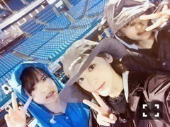
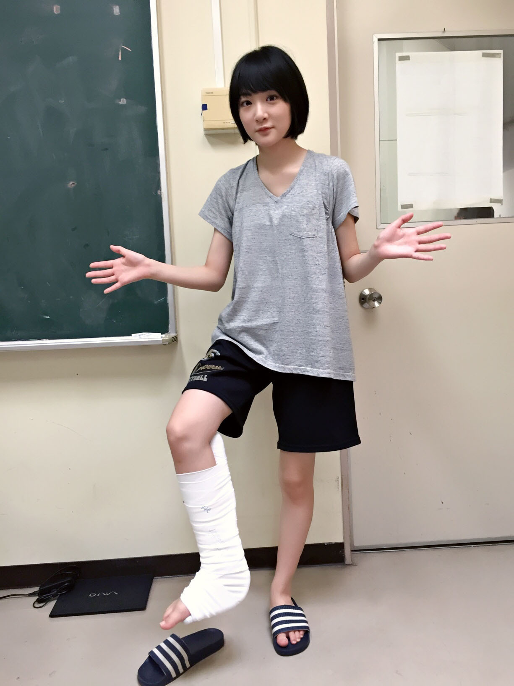

| 2016/09 03 Sat | 秋風が吹いてきた。 |
 生駒ですっ！！
生駒ですっ！！
どどどっと毎日が過ぎてゆきます。
まずっ！
乃木坂46真夏の全国ツアーにお越しくださった皆様ありがとうございました

そして、神宮球場で三日間にわたり行われました、乃木坂46 4th YEAR BIRTHDAY LIVE
個人的には、夏風邪をこじらせてのライブでした。
この夏は、自分にとって凄く難しい事が待っている夏でした。
また後でもお話ししますが、
ライブと舞台の稽古の両立をするのは、
不器用な、技術のまだない私にはとっても難しいな〜と、
やれるのかなぁ、、。
何とか身体元気に持って欲しいな〜って
気をつけていたのですが、案の定

バスラのリハを欠席させてもらったりして、
メンバーに、スタッフさんにものすごく助けてもらいました。・゜・(ノД`)・゜・。
私って、昔よりはなくなったけど、
必死になると周りが見えなくなってしまって、
空回りしちゃうのですよ。
そのくせにみんなに迷惑かけられないと頼る事をしなくなるのですよ。
分からない事をそのままにしてる方がダメなのにね

リハの時、
みんな心配してくれた。
大丈夫って。
安心して、みんな生駒の味方だよって。
それがどれだけ力になったことか。
みんなだってボロボロなのに(´；ω；｀)
スタッフさんも寝ないでずーっと乃木坂の事を考えて動いてくださって。
感謝って言葉じゃ表せないくらい沢山助けてもらいました！！！
お陰で、雨が降ったり、大変な三日間を笑顔で終える事が出来ました

ファンの皆様も、この夏、乃木坂を支えて下さりありがとうございましたっ！！！
地方で、神宮で聞いた歓声は大きなパワーとなり、
私を動かしてくれました！！
本当にありがとうございました！！
そして、れいかちゃん！！
私、やっぱMC向いてないや。
れいかちゃんのMCがいいし、円陣がいいな。
なんてっねっ
みんなに感謝！！

環状六号線披露出来て嬉しかった〜ヽ(・∀・)ノ⭐️⭐️
かんろくって私は略してます。
またかんろくで歌いたいなぁ。。。
乃木坂には色んなユニットがいますが。
是非、かんろくちゃんにももう一曲よろしくお願いします秋元先生
そしてそしてっっ
舞台 こち亀
9日初日でございますが、
の前にっ
私もさっきニュースで知りましたっっ
週刊少年ジャンプでのこち亀連載終わるんですねっっっ
なんて言えば良いのでしょうか。。
ですが、今稽古を通してこち亀のパワーを感じて、
こんなに面白い作品に出会えた事に感謝です！！
残りの連載も楽しみにしていますっ！！
今週の中川のお父さんもお母さんも麗子のお母さんも凄かった！
規模がでかいっっ！！
当たり前だけど、
大先輩の中に、
とても素敵な役者さん、演出の方の中に入ると勉強する量が凄いし、
あぁ、
自分ってこれっぽっちなんだと実感しますね。
そんな所でネガティヴになったって、出来ないんだからしゃーないんですけどね

難しいです〜
難しいです〜
でも、こんなに素敵な時間もう二度とないかも知れない。
大切にしたいです

とにかく、サキちゃん頑張りますっ！！
そして、明日の全国握手会、
ミニライブのみ参加です！
生駒ちゃんと握手したいと思ってくださっていたらすみません(´；ω；｀)
迷いました。
欠席しても良いのかと。。。
ですが、今の私には技術が、パワーがありません。
つけさせて下さい。
その代わり、
必ず楽しい舞台を作りますっ！！！
ブログに書いてしまったからには、
頑張るんだ私っ！！

全然話は繋がってないけど笑
ほん怖に出演できる人生になれて良かったです！！
それはもし取材などがありましたらそこでお話ししようかな笑
よしっ！！
まだまだいいたいことありますが、
ではっ
へばなっ☆彡
コメント(789)
2016/09/03 23:06